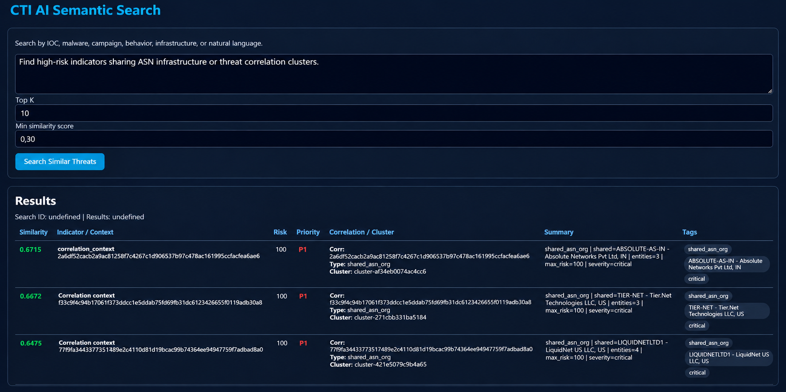
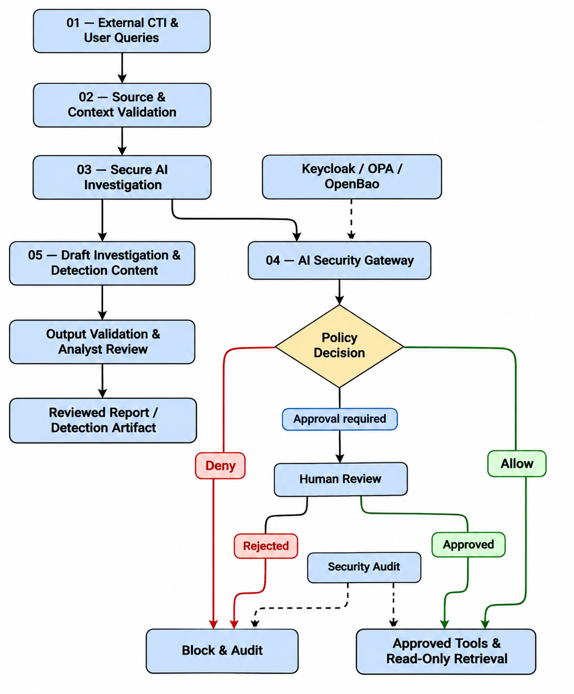

Connected Intelligence
Transform isolated threat indicators into enriched, searchable intelligence and meaningful relationships for contextual investigation.
Cyber Threat Intelligence, Connected Knowledge & AI Security
An intelligence engineering platform connecting multi-source threat collection, automated enrichment, knowledge graphs, semantic retrieval, AI-assisted investigation and detection engineering.
ShadowScope AM connects fragmented cyber threat intelligence into structured, searchable and investigation-ready knowledge, combining automated enrichment, threat relationships, semantic retrieval and AI-assisted security analysis.
ShadowScope AM is a Cyber Threat Intelligence engineering platform designed to transform fragmented security data into structured, connected and investigation-ready intelligence.
Its architecture brings together multi-source threat collection, automated enrichment, indicator normalization, contextual scoring, knowledge graphs, vector search, LLM-assisted investigation and detection engineering.
The project explores how threat intelligence can move beyond isolated IOC lookups toward evidence-oriented investigations supported by relationships, semantic context and reproducible detection workflows.
Security analysts collect information from advisories, intelligence feeds, vulnerability databases and security platforms that use different formats, confidence models and taxonomies.
Correlating indicators with threat actors, malware families, vulnerabilities and observed infrastructure often requires extensive manual investigation. Fragmented evidence also makes it difficult to explain why an indicator matters.
LLM-assisted investigation introduces additional risks, including unsupported conclusions, malicious instructions in untrusted sources, unreliable retrieved content and excessive tool permissions.
How can heterogeneous threat intelligence become actionable, connected and explainable while preserving evidence integrity and controlling AI-assisted security operations?
ShadowScope AM defines an intelligence processing pipeline connecting external CTI sources to normalized, enriched and searchable investigation records.
OpenSearch provides structured intelligence indexing. Neo4j represents relationships between relevant security entities, while Qdrant supports semantic retrieval over contextual intelligence and investigation material.
Local LLM integration and retrieval-based investigation are designed to combine structured CTI, graph relationships and relevant evidence to assist analysts with security questions and detection content preparation.
The next engineering phase extends the platform with three additional disciplines: AI Security, AI Governance and continuous AI Assurance.

The architecture follows a connected intelligence lifecycle, from heterogeneous source acquisition to investigation context and detection engineering outputs.
ShadowScope AM combines three complementary engineering capabilities to improve the organization, accessibility and controlled use of cyber threat intelligence.
Transform isolated threat indicators into enriched, searchable intelligence and meaningful relationships for contextual investigation.
Combine structured CTI, graph relationships and semantic retrieval to support threat analysis and detection engineering.
Extend AI-enabled investigation with independent authorization, governance controls, evidence-grounded evaluation and continuous assurance.
ShadowScope AM distinguishes its CTI engineering architecture from the next development phase focused on securing, governing and evaluating AI-assisted investigation workflows.
Source acquisition, IOC enrichment, structured indexing, graph modeling, semantic retrieval and detection-content preparation.
Trust-boundary enforcement, controlled tool access, AI risk management and governance requirements.
Grounding verification, retrieval quality, response evaluation, security regression tests and traceable assessment.
Actionable cyber threat intelligence requires more than data aggregation. It requires connected evidence, contextual analysis and security boundaries that keep AI-assisted investigation trustworthy and accountable.
A modular intelligence architecture connecting multi-source threat acquisition, automated enrichment, structured indexing, graph-based correlation, semantic retrieval, AI-assisted investigation and detection engineering.
ShadowScope AM is organized as a modular Cyber Threat Intelligence platform designed to transform heterogeneous security data into structured, correlated and investigation-ready intelligence.
The architecture separates source acquisition, data processing, intelligence indexing, knowledge representation, contextual investigation and detection engineering. Each layer has a distinct engineering responsibility and exchanges information through defined processing workflows.
A proposed cross-cutting security, governance and assurance layer extends the design to address AI trust boundaries, authorization, evidence quality and operational accountability.

The acquisition layer handles heterogeneous intelligence obtained from external APIs, threat feeds, vulnerability advisories and structured data files.
Python collectors and ingestion scripts provide the processing foundation. Incoming records pass through parsing, normalization, field validation and deduplication before being prepared for intelligence indexing.
OTX, MalwareBazaar
CISA KEV, NVD
AbuseIPDB, VirusTotal
PhishTank, OpenPhish
Shodan, Recorded Future
Extract source-specific fields
Produce consistent CTI records
Check data structure and values
Consolidate repeated observations
Original source records are preserved separately from normalized and correlated intelligence. MinIO supports raw-object retention, while processed datasets provide a consistent foundation for further investigation. Source identifiers and timestamps should remain associated with derived intelligence.
Once normalized, intelligence records enter correlation and prioritization workflows. Python processing scripts consolidate observations, identify related indicators and prepare investigation-oriented datasets.
OpenSearch acts as the structured intelligence indexing and retrieval layer. The design separates broader CTI records, correlated observations and selected high-priority intelligence.
Retains original source objects for reprocessing, inspection and provenance review.
Supports indicator lookup, correlation queries and analysis of related intelligence records.
Organizes curated indicators and relevant intelligence selected for investigation or detection preparation.
The processing layer is intended to move beyond isolated IOC storage. Enrichment, relationship context, confidence information and prioritization should help analysts distinguish relevant security observations from raw intelligence volume.
ShadowScope AM combines graph-based exploration and vector-based retrieval to provide complementary forms of intelligence context.
These components serve different purposes: graph queries expose explicit relationships, while semantic search retrieves content based on contextual similarity.
Neo4j represents CTI entities and their relationships, enabling analysts to examine connected infrastructure, indicators, malware families, threat actors and observations.
Qdrant stores vector embeddings generated from intelligence content, supporting similarity-based retrieval of relevant reports, descriptions and investigation context.
Graph relationships and vector search results can be combined with structured CTI records to assemble investigation context. Retrieved information remains supporting evidence and should retain its source references.
The investigation layer combines analyst queries, structured intelligence, graph context and semantic retrieval results. Python-based context preparation builds the evidence supplied to the LLM interface.
The assistant supports contextual threat analysis, investigation summaries and structured reporting. Outputs should distinguish retrieved evidence from model-generated interpretations.
Classification and detection-content preparation workflows use relevant CTI context and curated intelligence to draft detection rules and queries for security monitoring platforms.
Generated rules and queries require syntax validation, environment-specific testing, false-positive assessment and analyst approval before production deployment. Generated content is a reviewable engineering artifact, not an automatically trusted detection.
The proposed next development phase introduces cross-cutting controls around AI-assisted investigation and detection engineering.
These capabilities are intended to strengthen the security, accountability and reliability of AI-enabled workflows. Their implementation and effectiveness require separate engineering validation.
IAM/RBAC, prompt-injection protection, input and output controls, agent permissions and independent tool authorization.
PLANNED EXTENSIONModel usage policies, risk management, human oversight, governance responsibilities and applicable regulatory mapping.
PLANNED EXTENSIONEvidence grounding, retrieval quality, response evaluation, adversarial testing and measurable reliability criteria.
PLANNED EXTENSIONIntelligence provenance, model and prompt versions, retrieved evidence, tool decisions, audit logs and evaluation records.
PLANNED EXTENSIONExternal intelligence, graph context and retrieved documents must not grant AI systems unrestricted authority over security tools. Any future operational tool execution should be governed by independent authorization and traceable decisions.
Preserve Evidence. Connect Intelligence. Control AI. The architecture establishes a foundation for contextual threat investigation while defining the security and assurance requirements needed for its evolution.
Combining explicit threat relationships, vector-based semantic retrieval and local LLM-assisted analysis to support contextual, evidence-oriented cybersecurity investigations.
Explore explicit relationships between indicators, malware, infrastructure and correlation clusters.
RELATIONSHIP-BASED ANALYSISRetrieve contextually similar threat intelligence records using vector embeddings.
SIMILARITY-BASED DISCOVERYCombine available CTI evidence into structured assessments for analyst review.
AI-ASSISTED INVESTIGATIONShadowScope AM uses Neo4j to represent Cyber Threat Intelligence entities as connected nodes and relationships. Processed CTI records are transformed into graph structures through Python-based loading workflows.
The graph model supports the exploration of indicators, malware families, network infrastructure, intelligence sources and correlation clusters. Cypher queries allow analysts to investigate explicit associations rather than relying exclusively on isolated IOC lookups.
Graph exploration is particularly useful when multiple observations share infrastructure attributes, correlation records or malware associations. These relationships provide investigation context without independently proving common attribution.

Threat intelligence is represented through entities such as indicators, malware, clusters, sources, ASN and contextual infrastructure.
Cypher queries expose stored associations, shared attributes and cluster membership to support investigation and hypothesis building.
A graph relationship reflects the underlying source records and correlation rules. Shared infrastructure, cluster membership or a recorded malware association must be interpreted with the available provenance and confidence information.
ShadowScope AM integrates Qdrant to complement structured intelligence searches with vector-based semantic retrieval.
CTI descriptions and correlation context can be transformed into embeddings and stored with associated metadata. Analyst queries are converted into query vectors and compared against indexed intelligence records.
Similarity-ranked results can expose related infrastructure observations, threat descriptions and correlation clusters even when the analyst does not provide an exact indicator.

A similarity score measures proximity within the configured vector space. It is not a probability of maliciousness, a confidence score for attribution or proof that two indicators share the same threat actor. Risk and priority values must be evaluated separately.
ShadowScope AM includes a Python-based investigation API connected to a locally hosted LLM through Ollama. Analyst queries are used to prepare an investigation context from available threat intelligence.
The intended context combines structured CTI records, semantic retrieval results and available graph relationships. The assistant uses this information to prepare investigation summaries, risk interpretations and suggested defensive follow-up.
LLM-generated statements are treated as analytical output rather than independent threat intelligence. Important conclusions must remain reviewable against their original evidence.

Summarize relevant CTI and observed risk context.
Present indicators, relationships and retrieved evidence.
Prepare investigative recommendations for analyst verification.
Graph relationships, vector similarity and LLM-generated assessments provide complementary investigation capabilities, but they do not represent the same level or type of evidence.
Reliable investigations require source attribution, clear separation between observed data and inference, and explicit handling of unavailable or conflicting context.
| COMPONENT | CONTRIBUTION | RELIABILITY BOUNDARY |
|---|---|---|
| Neo4j | Explicit CTI entity relationships | Associations depend on source quality and correlation logic. |
| Qdrant | Similarity-based intelligence retrieval | Similarity does not establish malicious association or attribution. |
| Local LLM | Investigation summaries and contextual interpretation | Model-generated claims require supporting and verifiable evidence. |
The next phase will introduce systematic controls to strengthen investigation quality and assessment traceability.
Link critical findings to the intelligence records supporting them.
Validate exact indicators before inferring related infrastructure or threats.
Report missing graph context without substituting unsupported relationships.
Assess generated statements against retrieved evidence through repeatable tests.
ShadowScope AM combines three complementary investigation mechanisms that extend conventional exact-match IOC analysis.
Explore explicit associations between indicators, infrastructure, clusters and malware context.
Retrieve semantically related intelligence beyond exact IOC or keyword matching.
Consolidate relevant intelligence into structured assessments that remain subject to evidence verification.
Connected Intelligence. Evidence-Grounded Analysis. Defensible Conclusions.
A proposed security enforcement architecture designed to protect AI-assisted threat investigation, isolate untrusted intelligence, restrict sensitive tool operations and preserve human authority over operational decisions.
This chapter documents the target security architecture for ShadowScope AM. The gateway, policy enforcement and approval mechanisms described below are engineering requirements subject to implementation and dedicated laboratory validation.
ShadowScope AM processes threat intelligence collected from external feeds, APIs, indexed documents and knowledge repositories. Although these sources provide valuable investigation context, their content must be treated as potentially untrusted.
When external intelligence becomes part of an LLM investigation context, malicious instructions may attempt to manipulate analysis, expose sensitive information or initiate unauthorized operations through connected tools.
The proposed security design separates evidence retrieval, AI reasoning and operational authorization into independently controlled responsibilities.
Retrieve and process external CTI while preserving provenance, validation rules and separation between source data and trusted system instructions.
UNTRUSTED INPUT HANDLINGUse retrieved evidence to generate threat assessments, contextual interpretations and investigation recommendations without granting the model independent authority.
CONSTRAINED AI ASSISTANCEEvaluate sensitive operations against identity, resource, policy and approval requirements before permitting interaction with protected services.
INDEPENDENT ENFORCEMENTRetrieved intelligence may inform an investigation, but it must never override authorization policies, assign permissions or independently approve sensitive tool execution.
The proposed design introduces explicit trust boundaries across the CTI acquisition pipeline, knowledge retrieval, AI investigation and detection engineering workflows.
These boundaries establish where information changes security context, where independently enforced decisions are required and where analyst approval must remain authoritative.
| TRUST BOUNDARY | SECURITY OBJECTIVE | EXPECTED CONTROL |
|---|---|---|
| External CTI → Intelligence Pipeline | Prevent malicious source content from influencing trusted processing instructions. | Source validation, normalization and untrusted-content isolation. |
| Neo4j / Qdrant → LLM Context | Preserve the distinction between retrieved evidence and trusted application policies. | Retrieval validation, context separation and provenance tracking. |
| LLM → Tools & APIs | Prevent model-generated instructions from bypassing operational authorization. | Gateway mediation, identity verification, policy evaluation and least privilege. |
| AI Output → Detection Engineering | Prevent unsafe or unsupported detection content from being accepted for operational use. | Rule validation, controlled publication, testing and analyst approval. |

Draft investigation reports and detection artifacts follow validation and analyst review workflows. Requests to retrieve protected data, modify configurations, execute tools or deploy detections follow independent authorization and approval requirements.
Both workflows require appropriate traceability, but content review does not replace authorization for actions affecting protected systems.
A dedicated AI Security Gateway is proposed to mediate interactions between AI-assisted investigation workflows and protected APIs or security tools.
The gateway evaluates the requesting identity, permitted action, target resource, execution context and applicable approval requirements. Authorization is independent of the LLM-generated reasoning or recommendation.
Authenticate users and services, manage identities and support role-based access decisions.
IAM / RBACEvaluate tool permissions, target resources, request context and security policies independently of model-generated output.
OPA / POLICY DECISIONProtect service credentials and API secrets, with access limited to approved identities and execution workflows.
SECRETS MANAGEMENTIntercept AI-initiated requests, enforce allowed operations and prevent unauthorized access to protected endpoints.
EXECUTION CONTROLRequire explicit review for sensitive actions, significant configuration changes and detection deployment.
HUMAN-IN-THE-LOOPRecord requests, identities, policy decisions, approval outcomes and tool execution results for security review.
AUDIT / TRACEABILITYEvery sensitive request must cross the same authorization boundary, regardless of which AI workflow generated the recommendation.
Execute only the explicitly permitted operation within the approved scope.
Do not execute until the required approval is valid and the request is rechecked.
Reject unauthorized requests, prevent execution and record the security decision.
The proposed security model addresses attack paths introduced by untrusted CTI content, retrieved context, AI-generated tool requests and detection engineering outputs.
These scenarios establish the security requirements for the dedicated threat modeling and validation work described in Chapter 05.
| THREAT SCENARIO | PROPOSED DEFENSIVE CONTROL |
|---|---|
| Indirect Prompt Injection | Isolate instructions embedded within untrusted CTI reports and preserve tool authorization boundaries. |
| RAG Context Poisoning | Validate retrieved content, maintain provenance and prevent contextual data from overriding trusted instructions. |
| Unauthorized Tool Use | Apply independent policy evaluation, resource restrictions and least-privilege permissions. |
| Privilege Escalation | Bind permissions to verified identities and restrict unauthorized role or scope changes. |
| Sensitive Data Disclosure | Protect credentials, restrict access to sensitive intelligence and validate outbound content. |
| Unsafe Detection Generation | Validate generated artifacts, verify intended behavior and require analyst review before deployment. |
| Unauthorized Workflow Modification | Protect approved configurations, system prompts, policies and execution workflows against unauthorized changes. |
Input filtering and prompt-injection detection can reduce exposure to malicious instructions, but they cannot replace authorization controls.
The execution gateway must evaluate each sensitive request independently, even when malicious content was not detected earlier in the workflow.
ShadowScope AM prepares detection content for Sigma, Splunk, Wazuh and Suricata from available CTI and investigation context.
The proposed security extension introduces a controlled lifecycle between generated detection artifacts and their operational use. Syntactically valid output does not establish detection correctness, operational safety or effectiveness.
Generate platform-specific content
Check syntax and schema constraints
Assess logic, scope and unsafe behavior
Evaluate matches and false positives
Review evidence and intended use
Authorize distribution or deployment
Drafting a rule and deploying a rule are separate operations. Publication or deployment that affects protected systems requires explicit authorization in addition to technical validation and analyst approval.
The proposed controls require reproducible laboratory tests covering hostile CTI inputs, compromised retrieval context, unauthorized tool calls, restricted secret access and unsafe detection artifacts.
Validation will focus on policy independence, enforcement behavior, prevention of unauthorized execution and correlation between requests, decisions and audit records.
Verify that external content cannot override application instructions or grant privileges.
Verify that retrieved documents cannot bypass trusted policy or execution boundaries.
Verify deny-by-default behavior for operations outside an identity's permitted scope.
Verify that prohibited requests cannot retrieve protected credentials or service tokens.
Verify that sensitive changes remain blocked without valid approval and authorization.
Verify that requests, approvals, denied operations and execution outcomes produce correlatable records.
Each validation case should preserve the test input, authenticated identity, policy context, authorization decision, execution result and associated audit events. Reported outcomes must distinguish observed test results from expected security behavior.
The proposed AI Security layer extends ShadowScope AM toward controlled, security-enforced intelligence operations.
Its central architectural contribution is the separation of untrusted intelligence, model-generated reasoning and independently authorized operational execution.
Preserve separation between untrusted CTI content, retrieved context and trusted application instructions.
Constrain tool execution through verified identities, explicit permissions and policy decisions.
Establish human approval boundaries and traceable decisions for security-sensitive operations.
Untrusted Intelligence. Restricted AI Authority. Verified Execution.
Prompt injection, RAG poisoning, data exposure, tool misuse and defensive security controls.
Threat scenarios, defensive requirements, adversarial tests and security evidence.
AI risk assessment, governance controls, EU AI Act considerations, ISO/IEC 42001 and accountability mechanisms.
Risk register, control ownership, regulatory applicability and evidence mapping.
Evidence grounding, retrieval evaluation, model output quality, security regressions and measurable assessment criteria.
Evaluation datasets, quality metrics, grounding checks and traceable test results.
Existing technical demonstrations, laboratory evidence, security validation and engineering observations.
CTI pipeline, graph investigation, semantic search, AI assistance, detection generation and future security validation cases.
Technical contributions, architecture tradeoffs, engineering limitations and future development priorities.
Verified contributions, current gaps, measurable results and a phased development roadmap.